7 Markov Chain Monte Carlo
This chapter introduces the methods we will use for producing accurate approximations to Bayesian posterior distributions for realistic applications. The class of methods is called Markov chain Monte Carlo (MCMC), for reasons that will be explained later in the chapter. It is MCMC algorithms and software, along with fast computer hardware, that allow us to do Bayesian data analysis for realistic applications that would have been effectively impossible 30 years ago. (Kruschke, 2015, p. 144)
Statistician David Draper covered some of the history of MCMC in his lecture, Bayesian Statistical Reasoning.
7.1 Approximating a distribution with a large sample
The concept of representing a distribution by a large representative sample is foundational for the approach we take to Bayesian analysis of complex models. The idea is applied intuitively and routinely in everyday life and in science. For example, polls and surveys are founded on this concept: By randomly sampling a subset of people from a population, we estimate the underlying tendencies in the entire population. The larger the sample, the better the estimation. What is new in the present application is that the population from which we are sampling is a mathematically defined distribution, such as a posterior probability distribution. (p. 145)
Like in Chapters 4 and 6, we need to define our hdi_of_icdf() function.
hdi_of_icdf <- function(name, width = .95, tol = 1e-8, ... ) {
incredible_mass <- 1.0 - width
interval_width <- function(low_tail_prob, name, width, ...) {
name(width + low_tail_prob, ...) - name(low_tail_prob, ...)
}
opt_info <- optimize(interval_width, c(0, incredible_mass),
name = name, width = width,
tol = tol, ...)
hdi_lower_tail_prob <- opt_info$minimum
return(c(name(hdi_lower_tail_prob, ...),
name(width + hdi_lower_tail_prob, ...)))
}Our hdi_of_icdf() function will compute the analytic 95% highest density intervals (HDIs) for the distribution under consideration in Figure 7.1, \(\operatorname{beta}(\theta | 15, 7)\).
## [1] 0.4907001 0.8639305Using an equation from Chapter 6, \(\omega = (a − 1) / (a + b − 2)\), we can compute the corresponding mode.
## [1] 0.7To get the density in the upper left panel of Figure 7.1, we’ll make use of the dbeta() function and of our h[1:2] and omega values.
library(tidyverse)
library(cowplot)
tibble(theta = seq(from = 0, to = 1, length.out = 100)) %>%
ggplot() +
geom_ribbon(aes(x = theta, ymin = 0, ymax = dbeta(theta, shape1 = 15, shape2 = 7)),
fill = "steelblue") +
geom_segment(aes(x = h[1], xend = h[2], y = 0, yend = 0),
size = .75) +
geom_point(aes(x = omega, y = 0),
size = 1.5, shape = 19) +
annotate(geom = "text", x = .675, y = .4,
label = "95% HDI", color = "white") +
scale_x_continuous(expression(theta),
breaks = c(0, h, omega, 1),
labels = c("0", h %>% round(2), omega, "1")) +
ggtitle("Exact distribution") +
ylab(expression(p(theta))) +
theme_cowplot()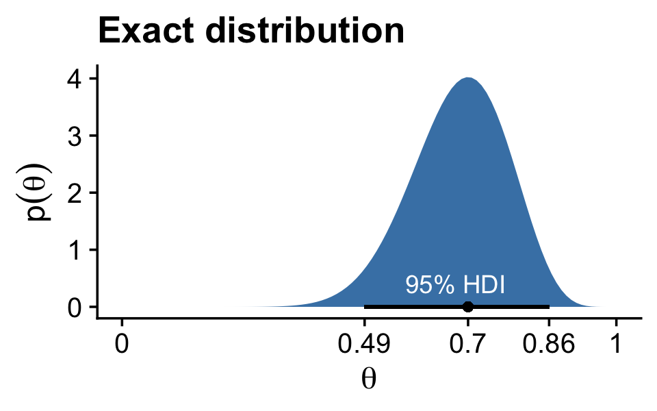
Note how we’re continuing to use theme_cowplot(), which we introduced in the last chapter. The remaining panels in Figure 7.1 require we simulate the data.
set.seed(7)
d <-
tibble(n = c(500, 5000, 50000)) %>%
mutate(theta = map(n, ~rbeta(., shape1 = 15, shape2 = 7))) %>%
unnest(theta) %>%
mutate(key = str_c("Sample N = ", n))
head(d)## # A tibble: 6 x 3
## n theta key
## <dbl> <dbl> <chr>
## 1 500 0.806 Sample N = 500
## 2 500 0.756 Sample N = 500
## 3 500 0.727 Sample N = 500
## 4 500 0.784 Sample N = 500
## 5 500 0.782 Sample N = 500
## 6 500 0.590 Sample N = 500With the data in hand, we’re ready to plot the remaining panels for Figure 7.1. This time, we’ll use the handy stat_pointinterval() function from the tidybayes package to mark off the mode and 95% HDIs.
library(tidybayes)
d %>%
ggplot(aes(x = theta, y = 0)) +
stat_histinterval(point_interval = mode_hdi, .width = .95, breaks = 30) +
scale_x_continuous(expression(theta), limits = c(0, 1)) +
scale_y_continuous(NULL, breaks = NULL) +
theme_cowplot() +
facet_wrap(~key, ncol = 3, scales = "free")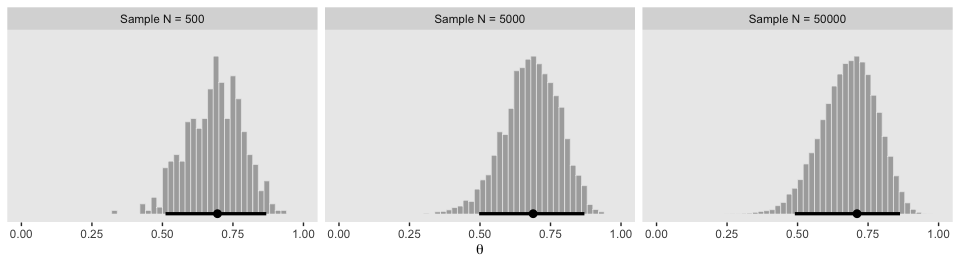
If we want the exact values for the mode and 95% HDIs, we can use the tidybayes::mode_hdi() function.
## # A tibble: 3 x 7
## key theta .lower .upper .width .point .interval
## <chr> <dbl> <dbl> <dbl> <dbl> <chr> <chr>
## 1 Sample N = 500 0.695 0.511 0.868 0.95 mode hdi
## 2 Sample N = 5000 0.688 0.497 0.870 0.95 mode hdi
## 3 Sample N = 50000 0.711 0.490 0.863 0.95 mode hdiIf you wanted a better sense of the phenomena, you could do a simulation. We’ll make a custom simulation function to compute the modes from many random draws from our \(\operatorname{beta}(\theta | 15, 7)\) distribution, with varying \(N\) values.
my_mode_simulation <- function(seed) {
set.seed(seed)
tibble(n = c(500, 5000, 50000)) %>%
mutate(theta = map(n, ~rbeta(., shape1 = 15, shape2 = 7))) %>%
unnest(theta) %>%
mutate(key = str_c("Sample N = ", n)) %>%
group_by(key) %>%
mode_hdi(theta)
}Here we put our my_mode_simulation() function to work.
# we need an index of the values we set our seed with in our `my_mode_simulation()` function
sim <-
tibble(seed = 1:1e3) %>%
group_by(seed) %>%
# inserting our subsamples
mutate(modes = map(seed, my_mode_simulation)) %>%
# unnesting allows us to access our model results
unnest(modes)
sim %>%
ggplot(aes(x = theta, y = key)) +
geom_vline(xintercept = .7, color = "white") +
stat_histinterval(.width = c(.5, .95), breaks = 20, fill = "steelblue") +
labs(title = expression("Variability of the mode for simulations of "*beta(theta*'|'*15*', '*7)*", the true mode of which is .7"),
subtitle = "For each sample size, the dot is the median, the inner thick line is the percentile-based 50% interval,\nand the outer thin line the percentile-based 95% interval. Although the central tendency\napproximates the true value for all three conditions, the variability of the mode estimate is inversely\nrelated to the sample size.",
x = "mode",
y = NULL) +
coord_cartesian(xlim = c(.6, .8),
ylim = c(1.25, 3.5)) +
theme_cowplot(font_size = 11.5) +
theme(axis.text.y = element_text(hjust = 0),
axis.ticks.y = element_blank())
7.2 A simple case of the Metropolis algorithm
Our goal in Bayesian inference is to get an accurate representation of the posterior distribution. One way to do that is to sample a large number of representative points from the posterior. The question then becomes this: How can we sample a large number of representative values from a distribution? (p. 146).
The answer, my friends, is MCMC.
7.2.1 A politician stumbles upon the Metropolis algorithm.
I’m not going to walk out Kruschke’s politician example in any detail, here. But if we denote \(P_\text{proposed}\) as the population of the proposed island and \(P_\text{current}\) as the population of the current island, then
\[p_\text{move} = \frac{P_\text{proposed}}{P_\text{current}}.\]
“What’s amazing about this heuristic is that it works: In the long run, the probability that the politician is on any one of the islands exactly matches the relative population of the island” (p. 147)!
7.2.2 A random walk.
The code below will allow us to reproduce Kruschke’s random walk. To give credit where it’s due, this is a mild amendment to the code from Chapter 8 of McElreath’s (2015) text, Statistical rethinking: A Bayesian course with examples in R and Stan.
set.seed(7)
num_days <- 5e4
positions <- rep(0, num_days)
current <- 4
for (i in 1:num_days) {
# record current position
positions[i] <- current
# flip coin to generate proposal
proposal <- current + sample(c(-1, 1), size = 1)
# now make sure he loops around from 7 back to 1
if (proposal < 1) proposal <- 7
if (proposal > 7) proposal <- 1
# move?
prob_accept_the_proposal <- proposal/current
current <- ifelse(runif(1) < prob_accept_the_proposal, proposal, current)
}If you missed it, positions is the main product of our simulation. Here we’ll put positions in a tibble and reproduce the top portion of Figure 7.2.
tibble(theta = positions) %>%
ggplot(aes(x = theta)) +
geom_bar(fill = "steelblue") +
scale_x_continuous(expression(theta), breaks = 1:7) +
scale_y_continuous(expand = expansion(mult = c(0, 0.05))) +
theme_cowplot()
Did you notice that scale_y_continuous() line in the code? Claus Wilke, the author of the cowplot package, has a lot of thoughts on data visualization. He even wrote a (2019a) book on it: Fundamentals of data visualization. In his (2019b) Themes vignette, Wilke recommended against allowing for space between the bottoms of the bars in a bar plot and the \(x\)-axis line. The ggplot2 default is to allow for such a space. Here we followed Wilke and suppressed that space with expand = expansion(mult = c(0, 0.05)). You can learn more about the ggplot2::expansion() function here.
Here’s the middle portion of Figure 7.2.
tibble(t = 1:5e4,
theta = positions) %>%
slice(1:500) %>%
ggplot(aes(x = theta, y = t)) +
geom_path(size = 1/4, color = "steelblue") +
geom_point(size = 1/2, alpha = 1/2, color = "steelblue") +
scale_x_continuous(expression(theta), breaks = 1:7) +
scale_y_log10("Time Step", breaks = c(1, 2, 5, 20, 100, 500)) +
theme_cowplot()
And now we make the bottom.
tibble(x = 1:7,
y = 1:7) %>%
ggplot(aes(x = x, y = y)) +
geom_col(width = .2, fill = "steelblue") +
scale_x_continuous(expression(theta), breaks = 1:7) +
scale_y_continuous(expression(p(theta)), expand = expansion(mult = c(0, 0.05))) +
theme_cowplot()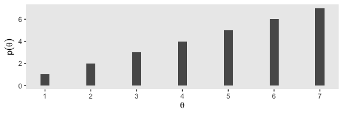
Notice that the sampled relative frequencies closely mimic the actual relative populations in the bottom panel! In fact, a sequence generated this way will converge, as the sequence gets longer, to an arbitrarily close approximation of the actual relative probabilities. (p. 149)
7.2.3 General properties of a random walk.
The tajectory shown in Figure 7.2 is just one possible sequence of positions when the movement heuristic is applied. At each time step, the direction of the proposed move is random, and if the relative probability of the proposed position is less than that of the current position, then acceptance of the proposed move is also random. Because of the randomness, if the process were started over again, then the specific trajectory would almost certainly be different. Regardless of the specific trajectory, in the long run the relative frequency of visits mimics the target distribution.
Figure 7.3 shows the probability of being in each position as a function of time. (p. 149)
I was initially stumped on how to reproduce the simulation depicted in Figure 7.3. However, fellow enthusiast Cardy Moten III kindly shared a solution which was itself based on Kruschke’s blog post from 2012, Metropolis algorithm: Discrete position probabilities. Here’s a mild reworking of their solutions. First, we simulate.
nslots <- 7
p_target <- 1:7
p_target <- p_target / sum(p_target)
# construct the transition matrix
proposal_matrix <- matrix(0, nrow = nslots, ncol = nslots)
for(from_idx in 1:nslots) {
for(to_idx in 1:nslots) {
if(to_idx == from_idx - 1) {proposal_matrix[from_idx, to_idx] <- 0.5}
if(to_idx == from_idx + 1) {proposal_matrix[from_idx, to_idx] <- 0.5}
}
}
# construct the acceptance matrix
acceptance_matrix <- matrix(0, nrow = nslots, ncol = nslots)
for(from_idx in 1:nslots) {
for(to_idx in 1:nslots) {
acceptance_matrix[from_idx, to_idx] <- min(p_target[to_idx] / p_target[from_idx], 1)
}
}
# compute the matrix of move probabilities
move_matrix <- proposal_matrix * acceptance_matrix
# compute the transition matrix, including the probability of staying in place
transition_matrix <- move_matrix
for (diag_idx in 1:nslots) {
transition_matrix[diag_idx, diag_idx] = 1.0 - sum(move_matrix[diag_idx, ])
}
# specify starting position vector:
position_vec <- rep(0, nslots)
position_vec[round(nslots / 2)] <- 1.0
p <- list()
data <-
tibble(position = 1:nslots,
prob = position_vec)
# loop through the requisite time indexes
# update the data and transition vector
for(time_idx in 1:99) {
p[[time_idx]] <- data
# update the position vec
position_vec <- position_vec %*% transition_matrix
# update the data
data <- NULL
data <-
tibble(position = 1:nslots,
prob = t(position_vec))
}Now we wrangle and plot.
p %>%
as_tibble_col() %>%
mutate(facet = str_c("italic(t)==", 1:99)) %>%
slice(c(1:14, 99)) %>%
unnest(value) %>%
bind_rows(
tibble(position = 1:nslots,
prob = p_target,
facet = "target")
) %>%
mutate(facet = factor(facet, levels = c(str_c("italic(t)==", c(1:14, 99)), "target"))) %>%
# plot!
ggplot(aes(x = position, y = prob, fill = facet == "target")) +
geom_col(width = .2) +
scale_fill_manual(values = c("steelblue", "goldenrod2"), breaks = NULL) +
scale_x_continuous(expression(theta), breaks = 1:7) +
scale_y_continuous(expression(italic(p)(theta)), expand = expansion(mult = c(0, 0.05))) +
theme_cowplot() +
facet_wrap(~facet, scales = "free_y", labeller = label_parsed)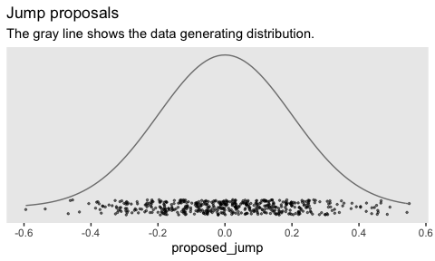
7.2.4 Why we care.
Through the simple magic of the random walk procedure,
we are able to do indirectly something we could not necessarily do directly: We can generate random samples from the target distribution. Moreover, we can generate those random samples from the target distribution even when the target distribution is not normalized.
This technique is profoundly useful when the target distribution \(P(\theta)\) is a posterior proportional to \(p(D | \theta) p(\theta)\). Merely by evaluating \(p(D | \theta) p(\theta)\), without normalizing it by \(p(D)\), we can generate random representative values from the posterior distribution. This result is wonderful because the method obviates direct computation of the evidence \(p(D)\), which, as you’ll recall, is one of the most difficult aspects of Bayesian inference. By using MCMC techniques, we can do Bayesian inference in rich and complex models. It has only been with the development of MCMC algorithms and software that Bayesian inference is applicable to complex data analysis, and it has only been with the production of fast and cheap computer hardware that Bayesian inference is accessible to a wide audience. (p. 152, emphasis in the original)
7.3 The Metropolis algorithm more generally
“The procedure described in the previous section was just a special case of a more general procedure known as the Metropolis algorithm, named after the first author of a famous article (Metropolis et al., 1953)” (p. 156).
Here’s how to generate a proposed jump from a zero-mean normal distribution with a standard deviation of 0.2.
## [1] -0.1985524To get a sense of what draws from rnorm() looks like in the long run, we might plot.
mu <- 0
sigma <- 0.2
# how many proposals would you like?
n <- 500
set.seed(7)
tibble(proposed_jump = rnorm(n, mean = mu, sd = sigma)) %>%
ggplot(aes(x = proposed_jump, y = 0)) +
geom_jitter(width = 0, height = .1,
size = 1/2, alpha = 1/2, color = "steelblue") +
# this is the idealized distribution
stat_function(fun = dnorm, args = list(mean = mu, sd = sigma),
color = "steelblue") +
scale_x_continuous(breaks = seq(from = -0.6, to = 0.6, length.out = 7)) +
scale_y_continuous(NULL, breaks = NULL) +
labs(title = "Jump proposals",
subtitle = "The blue line shows the data generating distribution.") +
theme_cowplot()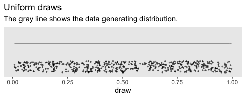
Anyway,
having generated a proposed new position, the algorithm then decides whether or not to accept the proposal. The decision rule is exactly what was already specified in Equation 7.1. In detail, this is accomplished by computing the ratio \(p_\text{move} = P(\theta_\text{proposed}) / P(\theta_\text{current})\). Then a random number from the uniform interval \([0, 1]\) is generated; in R, this can be accomplished with the command
runif(1). If the random number is between 0 and pmove, then the move is accepted. (p. 157)
We’ll see what that might look like in the next section. In the meantime, here’s how to use runif().
## [1] 0.2783186Just for kicks, here’s what that looks like in bulk.
# how many proposals would you like?
n <- 500
set.seed(7)
tibble(draw = runif(n)) %>%
ggplot(aes(x = draw, y = 0)) +
geom_jitter(width = 0, height = 1/4,
size = 1/2, alpha = 1/2, color = "steelblue") +
stat_function(fun = dunif,
color = "steelblue") +
scale_y_continuous(NULL, breaks = NULL, limits = c(-1/3, 5/3)) +
labs(title = "Uniform draws",
subtitle = "The blue line shows the data generating distribution.") +
theme_cowplot()
We do not see a concentration towards the mean, this time. The draws are uniformly distributed across the parameter space.
7.3.1 Metropolis algorithm applied to Bernoulli likelihood and beta prior.
You can find Kruschke’s code in the BernMetrop.R file. I’m going to break it up a little.
# specify the data, to be used in the likelihood function.
my_data <- c(rep(0, 6), rep(1, 14))
# define the Bernoulli likelihood function, p(D|theta).
# the argument theta could be a vector, not just a scalar
likelihood <- function(theta, data) {
z <- sum(data)
n <- length(data)
p_data_given_theta <- theta^z * (1 - theta)^(n - z)
# the theta values passed into this function are generated at random,
# and therefore might be inadvertently greater than 1 or less than 0.
# the likelihood for theta > 1 or for theta < 0 is zero
p_data_given_theta[theta > 1 | theta < 0] <- 0
return(p_data_given_theta)
}
# define the prior density function.
prior_d <- function(theta) {
p_theta <- dbeta(theta, 1, 1)
# the theta values passed into this function are generated at random,
# and therefore might be inadvertently greater than 1 or less than 0.
# the prior for theta > 1 or for theta < 0 is zero
p_theta[theta > 1 | theta < 0] = 0
return(p_theta)
}
# define the relative probability of the target distribution,
# as a function of vector theta. for our application, this
# target distribution is the unnormalized posterior distribution
target_rel_prob <- function(theta, data) {
target_rel_prob <- likelihood(theta, data) * prior_d(theta)
return(target_rel_prob)
}
# specify the length of the trajectory, i.e., the number of jumps to try:
traj_length <- 50000 # this is just an arbitrary large number
# initialize the vector that will store the results
trajectory <- rep(0, traj_length)
# specify where to start the trajectory:
trajectory[1] <- 0.01 # another arbitrary value
# specify the burn-in period
burn_in <- ceiling(0.0 * traj_length) # arbitrary number, less than `traj_length`
# initialize accepted, rejected counters, just to monitor performance:
n_accepted <- 0
n_rejected <- 0That first part follows what Kruschke put in his script. I’m going to bundel the next large potion in a fucntion, my_metropolis() which will make it easier to plug the code into the purrr::map() function.
my_metropolis <- function(proposal_sd) {
# now generate the random walk. the 't' index is time or trial in the walk.
# specify seed to reproduce same random walk
set.seed(47405)
## I'm taking this section out and will replace it
# # specify standard deviation of proposal distribution
# proposal_sd <- c(0.02, 0.2, 2.0)[2]
## end of the section I took out
for (t in 1:(traj_length - 1)) {
current_position <- trajectory[t]
# use the proposal distribution to generate a proposed jump
proposed_jump <- rnorm(1, mean = 0, sd = proposal_sd)
# compute the probability of accepting the proposed jump
prob_accept <- min(1,
target_rel_prob(current_position + proposed_jump, my_data)
/ target_rel_prob(current_position, my_data))
# generate a random uniform value from the interval [0, 1] to
# decide whether or not to accept the proposed jump
if (runif(1) < prob_accept) {
# accept the proposed jump
trajectory[t + 1] <- current_position + proposed_jump
# increment the accepted counter, just to monitor performance
if (t > burn_in) {n_accepted <- n_accepted + 1}
} else {
# reject the proposed jump, stay at current position
trajectory[t + 1] <- current_position
# increment the rejected counter, just to monitor performance
if (t > burn_in) {n_rejected <- n_rejected + 1}
}
}
# extract the post-burn_in portion of the trajectory
accepted_traj <- trajectory[(burn_in + 1) : length(trajectory)]
tibble(accepted_traj = accepted_traj,
n_accepted = n_accepted,
n_rejected = n_rejected)
# end of Metropolis algorithm
}Now we have my_metropolis(), we can run the analysis based on the three proposal_sd values, nesting the results in a tibble.
d <-
tibble(proposal_sd = c(0.02, 0.2, 2.0)) %>%
mutate(accepted_traj = map(proposal_sd, my_metropolis)) %>%
unnest(accepted_traj)
glimpse(d)## Rows: 150,000
## Columns: 4
## $ proposal_sd <dbl> 0.02, 0.02, 0.02, 0.02, 0.02, 0.02, 0.02, 0.02, 0.02, 0.02, 0.02, 0.02, 0.0…
## $ accepted_traj <dbl> 0.01000000, 0.01000000, 0.01000000, 0.01000000, 0.01149173, 0.02550380, 0.0…
## $ n_accepted <dbl> 46801, 46801, 46801, 46801, 46801, 46801, 46801, 46801, 46801, 46801, 46801…
## $ n_rejected <dbl> 3198, 3198, 3198, 3198, 3198, 3198, 3198, 3198, 3198, 3198, 3198, 3198, 319…Now we have d in hand, here’s the top portion of Figure 7.4.
d <-
d %>%
mutate(proposal_sd = str_c("Proposal SD = ", proposal_sd),
iter = rep(1:50000, times = 3))
d %>%
ggplot(aes(x = accepted_traj, y = 0)) +
stat_histinterval(point_interval = mode_hdi, .width = .95,
fill = "steelblue", slab_color = "white", outline_bars = T,
breaks = 40, normalize = "panels") +
scale_x_continuous(expression(theta), breaks = 0:5 * 0.2) +
scale_y_continuous(NULL, breaks = NULL) +
theme_cowplot() +
panel_border() +
facet_wrap(~ proposal_sd, ncol = 3)
The modes are the points and the lines depict the 95% HDIs. Also, did you notice our use of the cowplot::panel_border() function? The settings from theme_cowplot() can make it difficult to differentiate among subplots when faceting. By throwing in a call to panel_border() after theme_cowplot(), we added in lightweight panel borders.
Here’s the middle of Figure 7.4.
d %>%
ggplot(aes(x = accepted_traj, y = iter)) +
geom_path(size = 1/4, color = "steelblue") +
geom_point(size = 1/2, alpha = 1/2, color = "steelblue") +
scale_x_continuous(expression(theta), breaks = 0:5 * 0.2, limits = c(0, 1)) +
scale_y_continuous("Step in Chain", limits = c(49900, 50000)) +
ggtitle("End of Chain") +
theme_cowplot() +
panel_border() +
facet_wrap(~proposal_sd, ncol = 3)
The bottom:
d %>%
ggplot(aes(x = accepted_traj, y = iter)) +
geom_path(size = 1/4, color = "steelblue") +
geom_point(size = 1/2, alpha = 1/2, color = "steelblue") +
scale_x_continuous(expression(theta), breaks = 0:5 * 0.2, limits = c(0, 1)) +
scale_y_continuous("Step in Chain", limits = c(1, 100)) +
ggtitle("End of Chain") +
theme_cowplot() +
panel_border() +
facet_wrap(~proposal_sd, ncol = 3)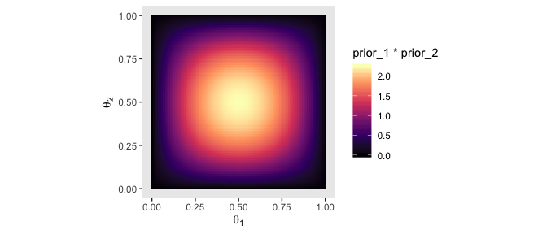
Regardless of the which proposal distribution in Figure 7.4 is used, the Metropolis algorithm will eventually produce an accurate representation of the posterior distribution, as is suggested by the histograms in the upper row of Figure 7.4. What differs is the efficiency of achieving a good approximation. (p. 160)
7.3.2 Summary of Metropolis algorithm.
The motivation for methods like the Metropolis algorithm is that they provide a high-resolution picture of the posterior distribution, even though in complex models we cannot explicitly solve the mathematical integral in Bayes’ rule. The idea is that we get a handle on the posterior distribution by generating a large sample of representative values. The larger the sample, the more accurate is our approximation. As emphasized previously, this is a sample of representative credible parameter values from the posterior distribution; it is not a resampling of data (there is a fixed data set).
The cleverness of the method is that representative parameter values can be randomly sampled from complicated posterior distributions without solving the integral in Bayes’ rule, and by using only simple proposal distributions for which efficient random number generators already exist. (p. 161)
7.4 Toward Gibbs sampling: Estimating two coin biases
“The Metropolis method is very useful, but it can be inefficient. Other methods can be more efficient in some situations” (p. 162).
7.4.1 Prior, likelihood and posterior for two biases.
We are considering situations in which there are two underlying biases, namely \(\theta_1\) and \(\theta_2\), for the two coins. We are trying to determine what we should believe about these biases after we have observed some data from the two coins. Recall that [Kruschke used] the term “bias” as the name of the parameter \(\theta\), and not to indicate that the value of \(\theta\) deviates from 0.5….
What we have to do next is specify a particular mathematical form for the prior distribution. We will work through the mathematics of a particular case for two reasons: First, it will allow us to explore graphical displays of two-dimensional parameter spaces, which will inform our intuitions about Bayes’ rule and sampling from the posterior distribution. Second, the mathematics will set the stage for a specific example of Gibbs sampling. Later in the book when we do applied Bayesian analysis, we will not be doing any of this sort of mathematics. We are doing the math now, for simple cases, to understand how the methods work so we can properly interpret their outputs in realistically complex cases. (pp. 163–165, emphasis in the original)
7.4.2 The posterior via exact formal analysis.
The plots in the left column of Figure 7.5 are outside of my skill set. I believe they are referred to as wireframe plots and it’s my understanding that ggplot2 does not support wireframe plots at this time. However, I can reproduce versions of the right hand column. For our initial attempt for the upper right corner, we’ll simulate.
set.seed(7)
betas <-
tibble(theta_1 = rbeta(1e5, shape1 = 2, shape2 = 2),
theta_2 = rbeta(1e5, shape1 = 2, shape2 = 2))
betas %>%
ggplot(aes(x = theta_1, y = theta_2)) +
stat_density_2d() +
labs(x = expression(theta[1]),
y = expression(theta[2])) +
coord_equal() +
theme_cowplot()
Instead of the contour lines, one might use color to depict the density variable.
betas %>%
ggplot(aes(x = theta_1, y = theta_2, fill = stat(density))) +
stat_density_2d(geom = "raster", contour = F) +
scale_fill_viridis_c(option = "A") +
labs(x = expression(theta[1]),
y = expression(theta[2])) +
coord_equal() +
theme_cowplot()
Remember how we talked about suppressing the unsightly white space between the bottom of bar-plot bars and the \(x\)-axis? Well, look at all that unsightly white space between the axes and the boundaries of the parameter space in our bivariate Beta plot. We can further flex our expansion() skills to get rid of those in the next plot. Speaking of which, we might make a more precise version of that plot with careful use of dbeta().
theta_sequence <- seq(from = 0, to = 1, by = .01)
tibble(theta_1 = theta_sequence,
theta_2 = theta_sequence) %>%
mutate(prior_1 = dbeta(x = theta_1, shape1 = 2, shape2 = 2),
prior_2 = dbeta(x = theta_2, shape1 = 2, shape2 = 2)) %>%
expand(nesting(theta_1, prior_1), nesting(theta_2, prior_2)) %>%
ggplot(aes(x = theta_1, y = theta_2, fill = prior_1 * prior_2)) +
geom_tile() +
scale_fill_viridis_c("joint prior density", option = "A") +
scale_x_continuous(expression(theta[1]), expand = expansion(mult = 0)) +
scale_y_continuous(expression(theta[2]), expand = expansion(mult = 0)) +
coord_equal() +
theme_cowplot()
Look at that–no more unsightly white space! We’ll need the bernoulli_likelihood() function from back in Chapter 6 for the middle right of Figure 7.5.
bernoulli_likelihood <- function(theta, data) {
# theta = success probability parameter ranging from 0 to 1
# data = the vector of data (i.e., a series of 0s and 1s)
n <- length(data)
z <- sum(data)
return(theta^z * (1 - theta)^(n - sum(data)))
}With our trusty bernoulli_likelihood() function in hand, we can now make a version of the middle right panel of Figure 7.5.
theta_1_data <- rep(0:1, times = c(8 - 6, 6))
theta_2_data <- rep(0:1, times = c(7 - 2, 2))
tibble(theta_1 = theta_sequence,
theta_2 = theta_sequence) %>%
mutate(likelihood_1 = bernoulli_likelihood(theta = theta_sequence,
data = theta_1_data),
likelihood_2 = bernoulli_likelihood(theta = theta_sequence,
data = theta_2_data)) %>%
expand(nesting(theta_1, likelihood_1), nesting(theta_2, likelihood_2)) %>%
ggplot(aes(x = theta_1, y = theta_2, fill = likelihood_1 * likelihood_2)) +
geom_tile() +
scale_fill_viridis_c("joint likelihood", option = "A") +
scale_x_continuous(expression(theta[1]), expand = expansion(mult = 0)) +
scale_y_continuous(expression(theta[2]), expand = expansion(mult = 0)) +
coord_equal() +
theme_cowplot()
Here’s the two-dimensional posterior, the lower right panel of Figure 7.5.
# we've already defined these, but here they are again
theta_sequence <- seq(from = 0, to = 1, by = .01)
theta_1_data <- rep(0:1, times = c(8 - 6, 6))
theta_2_data <- rep(0:1, times = c(7 - 2, 2))
# this is a redo from two plots up, but saved as `d_prior`
d_prior <-
tibble(theta_1 = theta_sequence,
theta_2 = theta_sequence) %>%
mutate(prior_1 = dbeta(x = theta_1, shape1 = 2, shape2 = 2),
prior_2 = dbeta(x = theta_2, shape1 = 2, shape2 = 2)) %>%
expand(nesting(theta_1, prior_1), nesting(theta_2, prior_2))
# this is a redo from one plot up, but saved as `d_likelihood`
d_likelihood <-
tibble(theta_1 = theta_sequence,
theta_2 = theta_sequence) %>%
mutate(likelihood_1 = bernoulli_likelihood(theta = theta_sequence,
data = theta_1_data),
likelihood_2 = bernoulli_likelihood(theta = theta_sequence,
data = theta_2_data)) %>%
expand(nesting(theta_1, likelihood_1), nesting(theta_2, likelihood_2))
# here we combine `d_prior` and `d_likelihood`
d_prior %>%
left_join(d_likelihood, by = c("theta_1", "theta_2")) %>%
# we need the marginal likelihood, the denominator in Bayes' rule
mutate(marginal_likelihood = sum(prior_1 * prior_2 * likelihood_1 * likelihood_2)) %>%
# finally, the two-dimensional posterior
mutate(posterior = (prior_1 * prior_2 * likelihood_1 * likelihood_2) / marginal_likelihood) %>%
# plot!
ggplot(aes(x = theta_1, y = theta_2, fill = posterior)) +
geom_tile() +
scale_fill_viridis_c(expression(italic(p)(theta[1]*', '*theta[2]*'|'*D)), option = "A") +
scale_x_continuous(expression(theta[1]), expand = expansion(mult = 0)) +
scale_y_continuous(expression(theta[2]), expand = expansion(mult = 0)) +
coord_equal() +
theme_cowplot()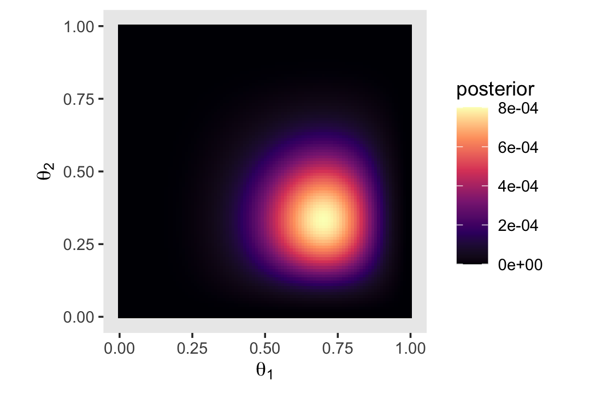
That last plot, my friends, is a depiction of
\[p(\theta_1, \theta_2 | D) = \frac{p(D | \theta_1, \theta_2) p(\theta_1, \theta_2)}{p(D)}.\]
7.4.3 The posterior via the Metropolis algorithm.
I’ve got nothing on this. But we’re here to learn HMC anyways. Read on.
7.4.4 Gibbs Hamiltonian Monte Carlo sampling.
Figure 7.7 is still out of my skill set. But let’s fit the model with our primary package, brms. First we need to load brms.
These, recall, are the data.
## # A tibble: 1 x 4
## z1 z2 n1 n2
## <dbl> <dbl> <dbl> <dbl>
## 1 6 2 8 7Kruschke said he was starting us out simply. But within the brms context, this is an intercepts-only multivariate model, which isn’t the simplest of things to code into brms. There are a couple ways to code a multivariate model in brms (Bürkner, 2020g). With this one, it makes sense to specify the model for each sequence of flips separately. This results in two models, which we’ll call model_1 and model_2.
Before we fit, we’ll have to address a technicality. The brms package does allow for multivariate Bernoulli models. However, it does not support such models with different numbers of trials across the variables. Since our first variable is of 8 trials and the second is of 7, brms will not support this model using the Bernoulli likelihood. However, we can fit the model in brms as an aggregated binomial2 model. The main difficulty is that the regularizing beta(2, 2) prior won’t make sense, here. So we’ll opt for the regularizing normal(0, 1), instead.
fit7.1 <-
brm(data = d,
family = binomial(),
model_1 + model_2,
prior(normal(0, 1), class = Intercept),
iter = 25500, warmup = 500, cores = 1, chains = 1,
seed = 7,
file = "fits/fit07.01")Here is a summary of the results.
## Family: MV(binomial, binomial)
## Links: mu = logit
## mu = logit
## Formula: z1 | trials(n1) ~ 1
## z2 | trials(n2) ~ 1
## Data: d (Number of observations: 1)
## Samples: 1 chains, each with iter = 25500; warmup = 500; thin = 1;
## total post-warmup samples = 25000
##
## Population-Level Effects:
## Estimate Est.Error l-95% CI u-95% CI Rhat Bulk_ESS Tail_ESS
## z1_Intercept 0.72 0.61 -0.42 1.95 1.00 18953 16018
## z2_Intercept -0.59 0.63 -1.84 0.64 1.00 23669 17197
##
## Samples were drawn using sampling(NUTS). For each parameter, Bulk_ESS
## and Tail_ESS are effective sample size measures, and Rhat is the potential
## scale reduction factor on split chains (at convergence, Rhat = 1).As we’ll learn in later chapters, the parameters of a typical aggregated binomial model are in the log-odds scale. Over time, you will learn how to interpret them. But for now, just be happy that brms offers the inv_logit_scaled() function, with which we might convert our results back to the probability scale.
## z1_Intercept z2_Intercept
## 0.6728984 0.3577065Here we’ll use posterior_samples() to collect out posterior draws and save them as a data frame, which we’ll name post.
With post in hand, we’re ready to make our version of Figure 7.8. To reduce the overplotting, we’re only looking at the first 500 post-warmup iterations.
post %>%
mutate(theta_1 = b_z1_Intercept %>% inv_logit_scaled(),
theta_2 = b_z2_Intercept %>% inv_logit_scaled()) %>%
filter(iter < 1001) %>%
ggplot(aes(x = theta_1, y = theta_2)) +
geom_point(alpha = 1/4, color = "steelblue") +
geom_path(size = 1/10, alpha = 1/2, color = "steelblue") +
scale_x_continuous(expression(theta[1]), expand = expansion(mult = 0), limits = c(0, 1)) +
scale_y_continuous(expression(theta[2]), expand = expansion(mult = 0), limits = c(0, 1)) +
coord_equal() +
theme_cowplot()
Just for kicks and giggles, we’ll plot the marginal posterior densities. You’ll note that even though we didn’t use beta priors, the posteriors look quite beta like.
post %>%
mutate(`theta[1]` = b_z1_Intercept %>% inv_logit_scaled(),
`theta[2]` = b_z2_Intercept %>% inv_logit_scaled()) %>%
pivot_longer(`theta[1]`:`theta[2]`) %>%
ggplot(aes(x = value, y = name)) +
stat_halfeye(point_interval = mode_hdi, .width = c(.5, .95), fill = "steelblue") +
scale_y_discrete(NULL, labels = ggplot2:::parse_safe, expand = expansion(mult = 0)) +
xlab("posterior") +
theme_cowplot()
Did you see how our use of expand = expansion(mult = 0) didn’t work so well with this plot? The problem is the mode dot and HDI lines at the base of the lower density gets cut off when you remove all of the white space underneath the density. A partial solution is to adjust the value within expansion() to be small, but just large enough to let the mode and HDI marks breathe.
post %>%
mutate(`theta[1]` = b_z1_Intercept %>% inv_logit_scaled(),
`theta[2]` = b_z2_Intercept %>% inv_logit_scaled()) %>%
pivot_longer(`theta[1]`:`theta[2]`) %>%
ggplot(aes(x = value, y = name)) +
stat_halfeye(point_interval = mode_hdi, .width = c(.5, .95), fill = "steelblue") +
scale_y_discrete(NULL, labels = ggplot2:::parse_safe, expand = expansion(mult = 0.05)) +
xlab("posterior") +
theme_cowplot()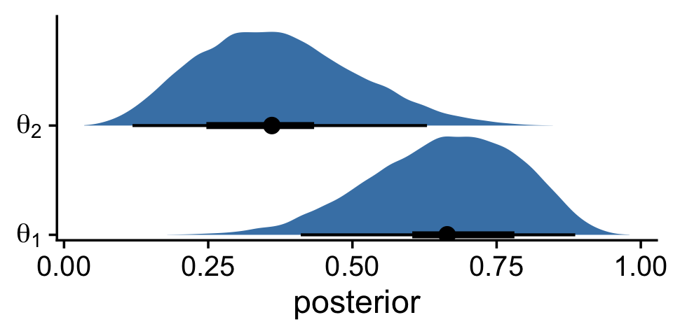
7.4.5 Is there a difference between biases?
The difference distribution from our brms-based multivariate aggregated binomial model, \(\theta_1 - \theta_2\), is pretty similar to the ones in Figure 7.9.
post %>%
mutate(theta_1 = b_z1_Intercept %>% inv_logit_scaled(),
theta_2 = b_z2_Intercept %>% inv_logit_scaled()) %>%
transmute(`theta_1 - theta_2` = theta_1 - theta_2) %>%
ggplot(aes(x = `theta_1 - theta_2`, y = 0)) +
stat_histinterval(point_interval = mode_hdi, .width = .95,
fill = "steelblue2", slab_color = "steelblue4", outline_bars = T,
breaks = 40, normalize = "panels") +
scale_x_continuous(expression(theta[1]-theta[2]), limits = c(-.5, .9)) +
scale_y_continuous(NULL, breaks = NULL) +
theme_cowplot()
Here are the exact estimates of the mode and 95% HDIs for our difference distribution, \(\theta_1 - \theta_2\).
post %>%
mutate(theta_1 = b_z1_Intercept %>% inv_logit_scaled(),
theta_2 = b_z2_Intercept %>% inv_logit_scaled()) %>%
transmute(`theta_1 - theta_2` = theta_1 - theta_2) %>%
mode_hdi()## theta_1 - theta_2 .lower .upper .width .point .interval
## 1 0.2974906 -0.07716013 0.6437771 0.95 mode hdiGiven that we used both a different likelihood function, which necessitated a different prior, I think we did pretty good complimenting the results in the text.
7.4.6 Terminology: MCMC.
Any simulation that samples a lot of random values from a distribution is called a Monte Carlo simulation, named after the dice and spinners and shufflings of the famous casino locale. The appellation “Monte Carlo” is attributed (Eckhardt, 1987) to the mathematicians Stanislaw Ulam (1909–1984) and John von Neumann (1903–1957). (p. 177)
In case you didn’t know, brms is a user-friendly interface for the Stan probabilistic programing language (Stan; Carpenter et al., 2017) and Stan is named after Stanislaw Ulam.
7.5 MCMC representativeness, accuracy, and efficiency
We have three main goals in generating an MCMC sample from the posterior distribution:
- The values in the chain must be representative of the posterior distribution. They should not be unduly influenced by the arbitrary initial value of the chain, and they should fully explore the range of the posterior distribution without getting stuck.
- The chain should be of sufficient size so that estimates are accurate and stable. In particular, the estimates of the central tendency (such as median or mode), and the limits of the 95% HDI, should not be much different if the MCMC analysis is run again (using different seed states for the pseudorandom number generators).
- The chain should be generated efficiently, with as few steps as possible, so not to exceed our patience or computing power. (p. 178, emphasis in the original)
7.5.1 MCMC representativeness.
Kruschke defined our data in the note for Figure 7.10.
Here we fit the model. Note how since we’re just univariate, it’s easy to switch back to directly modeling with the Bernoulli likelihood.
fit7.2 <-
brm(data = d,
family = bernoulli(link = identity),
y ~ 1,
prior(beta(2, 2), class = Intercept),
iter = 10000, warmup = 500, cores = 3, chains = 3,
control = list(adapt_delta = 0.9),
seed = 7,
file = "fits/fit07.02")On page 179, Kruschke discussed burn-in steps within the Gibbs framework:
The preliminary steps, during which the chain moves from its unrepresentative initial value to the modal region of the posterior, is called the burn-in period. For realistic applications, it is routine to apply a burn-in period of several hundred to several thousand steps.
For each HMC chain, the first \(n\) iterations are called “warmups.” In this example, \(n = 500\) (i.e., warmup = 500). Within the Stan-HMC paradigm, warmups are somewhat analogous to but not synonymous with burn-in iterations as done by the Gibbs sampling in JAGS. But HMC warmups are like Gibbs burn-ins in that both are discarded and not used to describe the posterior. For more on warmup, check out McElreath’s lecture, starting here or, for more detail, the HMC Algorithm Parameters section (15.2) of the Stan reference manual, version 2.24 (Stan Development Team, 2020a).
It appears that the upshot of all this is some of the packages in the Stan ecosystem don’t make it easy to extract the warmup values. For example, the brms::plot() function excludes them from the trace plot without the option to include them.
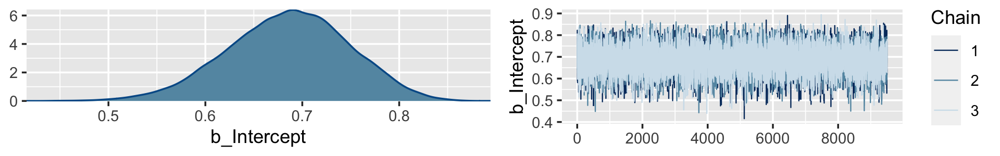
Notice how the \(x\)-axis on the trace plot ranges from 0 to 9,500. Now recall that our model code included iter = 10000, warmup = 500. Those 9,500 iterations in the trace plot are excluding the first 500 warmup iterations. This code is a little janky, but if you really want those warmup iterations, you can extract them from the fit7.2 object like this.
warmups <-
c(fit7.2$fit@sim$samples[[1]]$b_Intercept[1:500],
fit7.2$fit@sim$samples[[2]]$b_Intercept[1:500],
fit7.2$fit@sim$samples[[3]]$b_Intercept[1:500]) %>%
# since these come from lists, here we'll convert them to a data frame
as.data.frame() %>%
rename(b_Intercept = ".") %>%
# we'll need to recapture the iteration and chain information
mutate(iter = rep(1:500, times = 3),
chain = factor(rep(1:3, each = 500),
levels = c("1", "2", "3")))
warmups %>%
head()## b_Intercept iter chain
## 1 0.2981264 1 1
## 2 0.2981264 2 1
## 3 0.2981264 3 1
## 4 0.2981264 4 1
## 5 0.2991483 5 1
## 6 0.2937265 6 1The bayesplot package (Gabry et al., 2019; Gabry & Mahr, 2019) makes it easier to reproduce some of the plots in Figure 7.10.
We’ll reproduce the upper left panel with mcmc_trace().

As an alternative, we can also extract the warmup draws from a brm() fit with the ggmcmc package (Fernández i Marín, 2016, 2020).
The ggmcmc package has a variety of convenience functions for working with MCMC chains. The ggs() function extracts the posterior draws, including warmup, and arranges them in a tidy tibble. With those in hand, we can now make a trace plot with warmup draws.
ggs(fit7.2) %>%
filter(Iteration < 501 &
Parameter == "b_Intercept") %>%
mutate(chain = factor(Chain)) %>%
ggplot(aes(x = Iteration, y = value, color = chain)) +
geom_line() +
scale_colour_brewer(direction = -1) +
labs(title = "My custom trace plots with warmups via ggmcmc::ggs()",
x = NULL, y = NULL) +
theme_cowplot(font_size = 12)
It appears our HMC warmup iterations found the posterior quite quickly. Here’s the autocorrelation plot.

Our autocorrelation plots indicate substantially lower autocorrelations yielded by HMC as implemented by Stan than what Kruschke generated with the MH algorithm. This is one of the reasons folks using HMC tend to use fewer iterations than those using MH or Gibbs.
If you were unhappy with the way mcmc_acf() defaults to faceting the plot by chain, you could always extract the data from the function and use them to make the plot the way you prefer. E.g.,
mcmc_acf(warmups)$data %>%
as_tibble() %>%
filter(Parameter == "b_Intercept") %>%
ggplot(aes(x = Lag, y = AC,
color = Chain %>% as.factor())) +
geom_hline(yintercept = 0, color = "white") +
geom_point(size = 2/3) +
geom_line() +
scale_colour_brewer(direction = -1) +
ylab("Autocorrelation") +
theme_cowplot() +
theme(legend.position = "none")
Here are the overlaid densities.

The densities aren’t great, but they still appear nicer than those in for the burn-in iterations in the text. With our warmups in their current state, I’m not aware how we might conveniently make a shrink factor plot, as seen in the lower left of Figure 7.10. So it goes…
Figure 7.11 examined the post-burn-in iterations. We’ll follow suit with our post-warmup iterations.
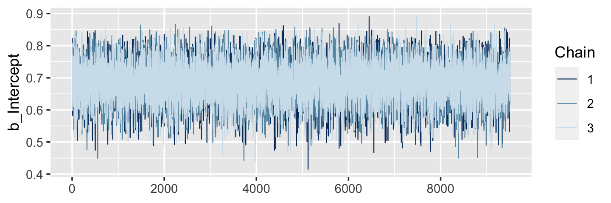
The autocorrelation plots:

As with the warmups, above, the post-warmup autocorrelation plots indicate substantially lower autocorrelations yielded by HMC as implemented by Stan than what Kruschke generated with the MH algorithm. This is one of the reasons folks using HMC tend to use fewer iterations than those using MH or Gibbs.
Here are the overlaid densities.
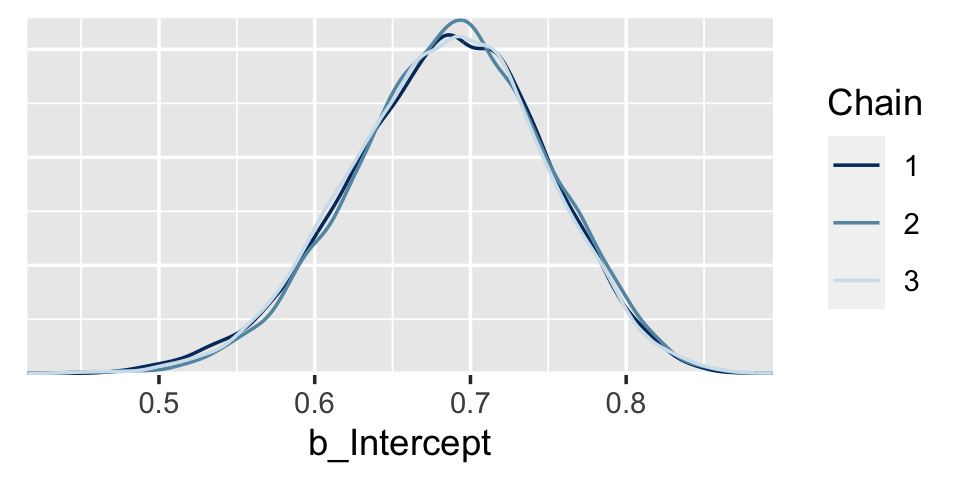
Now that we’re focusing on the post-warmup iterations, we can make a shrink factor plot. We’ll do so with the coda::gelman.plot() function. But you can’t just dump your brm() fit object into coda::gelman.plot(). It’s the wrong object type. However, brms offers the as.mcmc() function which will convert brm() objects for use in coda package functions.
## List of 3
## $ : 'mcmc' num [1:9500, 1:2] 0.78 0.822 0.699 0.648 0.702 ...
## ..- attr(*, "dimnames")=List of 2
## .. ..$ iterations: NULL
## .. ..$ parameters: chr [1:2] "b_Intercept" "lp__"
## ..- attr(*, "mcpar")= num [1:3] 501 10000 1
## $ : 'mcmc' num [1:9500, 1:2] 0.76 0.754 0.725 0.725 0.672 ...
## ..- attr(*, "dimnames")=List of 2
## .. ..$ iterations: NULL
## .. ..$ parameters: chr [1:2] "b_Intercept" "lp__"
## ..- attr(*, "mcpar")= num [1:3] 501 10000 1
## $ : 'mcmc' num [1:9500, 1:2] 0.808 0.788 0.803 0.65 0.65 ...
## ..- attr(*, "dimnames")=List of 2
## .. ..$ iterations: NULL
## .. ..$ parameters: chr [1:2] "b_Intercept" "lp__"
## ..- attr(*, "mcpar")= num [1:3] 501 10000 1
## - attr(*, "class")= chr "mcmc.list"With our freshly-converted fit2_c object in hand, we’re ready to plot.

Looks great. As Kruschke explained on page 181, that plot is based on the potential scale reduction factor, or \(\widehat R\) as it’s typically referred to in the Stan ecosystem. Happily, brms reports the \(\widehat R\) values for the major model parameters using print() or summary().
## Family: bernoulli
## Links: mu = identity
## Formula: y ~ 1
## Data: d (Number of observations: 50)
## Samples: 3 chains, each with iter = 10000; warmup = 500; thin = 1;
## total post-warmup samples = 28500
##
## Population-Level Effects:
## Estimate Est.Error l-95% CI u-95% CI Rhat Bulk_ESS Tail_ESS
## Intercept 0.69 0.06 0.56 0.80 1.00 9215 9302
##
## Samples were drawn using sampling(NUTS). For each parameter, Bulk_ESS
## and Tail_ESS are effective sample size measures, and Rhat is the potential
## scale reduction factor on split chains (at convergence, Rhat = 1).Instead of a running value, you get a single statistic in the ‘Rhat’ column.
On page 181, Kruschke discussed how his overlaid density plots include the HDIs, by chain. The convenience functions from brms and bayesplot don’t easily get us there. But we can get those easy enough with a little help tidybayes::stat_halfeye().
post %>%
ggplot(aes(x = b_Intercept, y = chain, fill = chain)) +
stat_halfeye(point_interval = mode_hdi,
.width = .95) +
scale_fill_brewer(direction = -1) +
scale_y_discrete(expand = expansion(mult = 0.025)) +
theme_cowplot() +
theme(legend.position = "none")
7.5.2 MCMC accuracy.
We’ll wrangle our post object a bit to make it easier to reproduce Figure 7.12.
lagged_post <-
post %>%
filter(chain == 1) %>%
select(b_Intercept, iter) %>%
rename(lag_0 = b_Intercept) %>%
mutate(lag_1 = lag(lag_0, 1),
lag_5 = lag(lag_0, 5),
lag_10 = lag(lag_0, 10)) %>%
pivot_longer(-iter,
names_to = "key")
head(lagged_post)## # A tibble: 6 x 3
## iter key value
## <dbl> <chr> <dbl>
## 1 501 lag_0 0.780
## 2 501 lag_1 NA
## 3 501 lag_5 NA
## 4 501 lag_10 NA
## 5 502 lag_0 0.822
## 6 502 lag_1 0.780Here’s our version of the top row.
p1 <-
lagged_post %>%
filter(key %in% c("lag_0", "lag_1"),
iter > 1000 & iter < 1071) %>%
ggplot(aes(x = iter, y = value, color = key)) +
geom_point() +
geom_line() +
scale_color_manual(values = c("black", "steelblue")) +
labs(x = "Index 1001:1071",
title = "Lag 1")
p2 <-
lagged_post %>%
filter(key %in% c("lag_0", "lag_5"),
iter > 1000 & iter < 1071) %>%
ggplot(aes(x = iter, y = value, color = key)) +
geom_point() +
geom_line() +
scale_color_manual(values = c("black", "steelblue")) +
labs(x = "Index 1001:1071",
title = "Lag 5")
p3 <-
lagged_post %>%
filter(key %in% c("lag_0", "lag_10"),
iter > 1000 & iter < 1071) %>%
ggplot(aes(x = iter, y = value, color = key)) +
geom_point() +
geom_line() +
scale_color_manual(values = c("black", "steelblue")) +
labs(x = "Index 1001:1071",
title = "Lag 10")
library(patchwork)
(p1 + p2 + p3) &
theme_cowplot() &
theme(legend.position = "none")
Here’s the middle row for Figure 7.12.
lagged_post_wide <-
lagged_post %>%
spread(key = key, value = value)
p1 <-
lagged_post_wide %>%
filter(iter > 1000 & iter < 1071) %>%
ggplot(aes(x = lag_1, y = lag_0)) +
stat_smooth(method = "lm") +
geom_point()
p2 <-
lagged_post_wide %>%
filter(iter > 1000 & iter < 1071) %>%
ggplot(aes(x = lag_5, y = lag_0)) +
stat_smooth(method = "lm") +
geom_point()
p3 <-
lagged_post_wide %>%
filter(iter > 1000 & iter < 1071) %>%
ggplot(aes(x = lag_10, y = lag_0)) +
stat_smooth(method = "lm") +
geom_point()
(p1 + p2 + p3) &
theme_cowplot()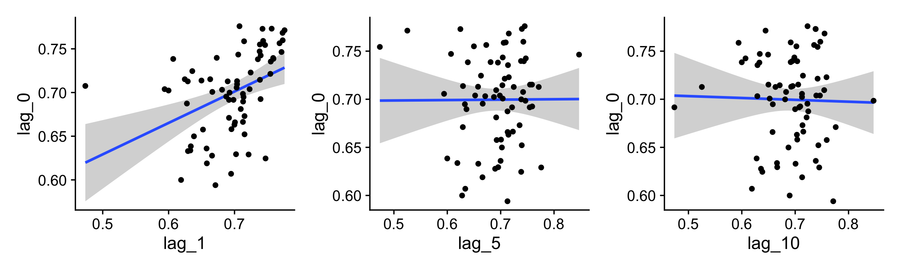
For kicks and giggles, we used stat_smooth() to add an OLS regression line with its 95% confidence intervals to each plot.
If you want the Pearson’s correlations among the lags, the lowerCor() function from the psych package (Revelle, 2020) can be handy.
library(psych)
lagged_post_wide %>%
select(-iter) %>%
filter(!is.na(lag_10)) %>%
lowerCor(digits = 3)## lag_0 lag_1 lag_10 lag_5
## lag_0 1.000
## lag_1 0.455 1.000
## lag_10 0.021 0.016 1.000
## lag_5 0.053 0.080 0.053 1.000For our version of the bottom of Figure 7.12, we’ll use the bayesplot::mcmc_acf_bar() function to get the autocorrelation bar plot, by chain.
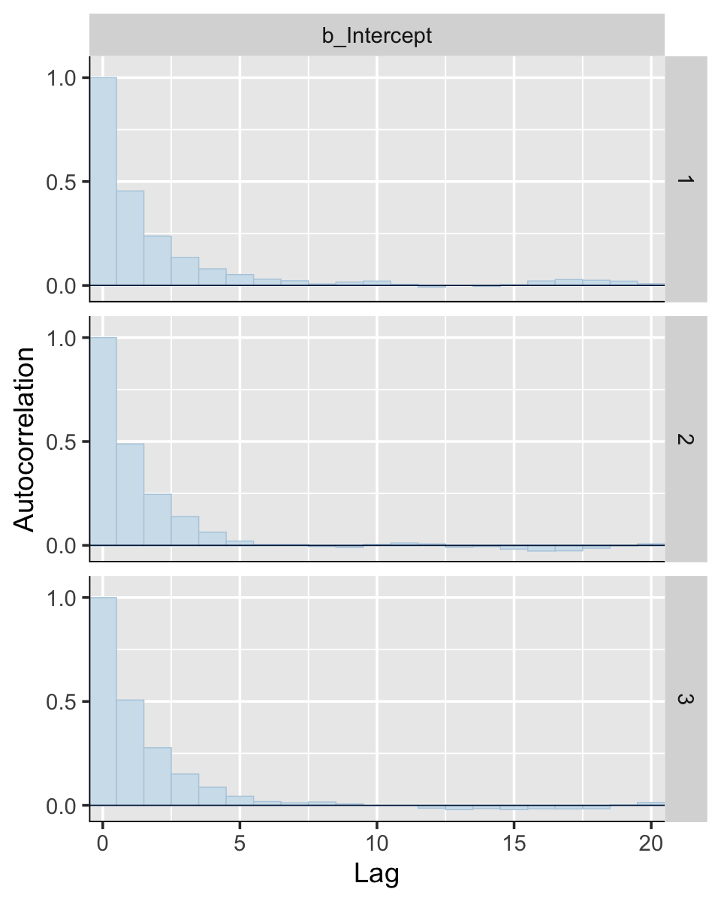
All three rows of our versions for Figure 7.12 indicate in their own way how much lower our autocorrelations were than the ones in the text.
If you’re curious of the effective sample sizes for the parameters in your brms models, just look at the model summary using either summary() or print().
## Family: bernoulli
## Links: mu = identity
## Formula: y ~ 1
## Data: d (Number of observations: 50)
## Samples: 3 chains, each with iter = 10000; warmup = 500; thin = 1;
## total post-warmup samples = 28500
##
## Population-Level Effects:
## Estimate Est.Error l-95% CI u-95% CI Rhat Bulk_ESS Tail_ESS
## Intercept 0.69 0.06 0.56 0.80 1.00 9215 9302
##
## Samples were drawn using sampling(NUTS). For each parameter, Bulk_ESS
## and Tail_ESS are effective sample size measures, and Rhat is the potential
## scale reduction factor on split chains (at convergence, Rhat = 1).Look at the last two columns in the Intercept summary. Earlier versions of brms had one column named Eff.Sample, which reported the effect sample size as discussed by Kruschke. Starting with version 2.10.0, brms now returns Bulk_ESS and Tail_ESS, instead. These originate from a (2019) preprint by Stan-team all-stars Vehtari, Gelman, Simpson, Carpenter, and Bürkner. From their paper, we read:
If you plan to report quantile estimates or posterior intervals, we strongly suggest assessing the convergence of the chains for these quantiles. In Section 4.3 we show that convergence of Markov chains is not uniform across the parameter space and propose diagnostics and effective sample sizes specifically for extreme quantiles. This is different from the standard ESS estimate (which we refer to as the “bulk-ESS”), which mainly assesses how well the centre of the distribution is resolved. Instead, these “tail-ESS” measures allow the user to estimate the MCSE for interval estimates. (p. 5, emphasis in the original)
For more technical details, see the paper. The Bulk_ESS column in current versions of brms is what was previously referred to as Eff.Sample. This is what corresponds to what Kruschke meant when referring to effective sample size. Now rather than focusing solely on ‘the center of the’ posterior distribution’ as indexed by Bulk_ESS, we also gauge the effective sample size in the posterior intervals using Tail_ESS.
Anyway, I’m not quite sure how to reproduce Kruschke’s MCMC ESS simulation studies. If you’ve got it figured out, please share your code in my GitHub issue #15.
If you’re interested in the Monte Carlo standard error (MCSE) for your brms parameters, the easiest way is to tack $fit onto your fit object.
## Inference for Stan model: f2927ce8aaeb3b4a2a85b64487208e39.
## 3 chains, each with iter=10000; warmup=500; thin=1;
## post-warmup draws per chain=9500, total post-warmup draws=28500.
##
## mean se_mean sd 2.5% 25% 50% 75% 97.5% n_eff Rhat
## b_Intercept 0.69 0.00 0.06 0.56 0.64 0.69 0.73 0.80 9156 1
## lp__ -30.79 0.01 0.68 -32.75 -30.96 -30.53 -30.35 -30.31 8163 1
##
## Samples were drawn using NUTS(diag_e) at Sun Sep 20 15:22:05 2020.
## For each parameter, n_eff is a crude measure of effective sample size,
## and Rhat is the potential scale reduction factor on split chains (at
## convergence, Rhat=1).This returns an rstan-like summary (Stan Development Team, 2020c). The ‘se_mean’ column is the MCSE.
7.5.3 MCMC efficiency.
Kruschke wrote: “It is often the case in realistic applications that there is strong autocorrelation for some parameters, and therefore, an extremely long chain is required to achieve an adequate ESS or MCSE” (p. 187). As we’ll see, this is generally less of a problem for HMC than for MH or Gibbs. But it does still crop up, particularly in complicated models. As he wrote on the following page, “one sampling method that can be relatively efficient is Hamiltonian Monte Carlo.” Indeed.
Session info
## R version 3.6.3 (2020-02-29)
## Platform: x86_64-apple-darwin15.6.0 (64-bit)
## Running under: macOS Catalina 10.15.3
##
## Matrix products: default
## BLAS: /Library/Frameworks/R.framework/Versions/3.6/Resources/lib/libRblas.0.dylib
## LAPACK: /Library/Frameworks/R.framework/Versions/3.6/Resources/lib/libRlapack.dylib
##
## locale:
## [1] en_US.UTF-8/en_US.UTF-8/en_US.UTF-8/C/en_US.UTF-8/en_US.UTF-8
##
## attached base packages:
## [1] stats graphics grDevices utils datasets methods base
##
## other attached packages:
## [1] psych_1.9.12.31 patchwork_1.0.1.9000 ggmcmc_1.4.1 bayesplot_1.7.1
## [5] brms_2.13.5 Rcpp_1.0.5 tidybayes_2.1.1 cowplot_1.0.0.9000
## [9] forcats_0.5.0 stringr_1.4.0 dplyr_1.0.1 purrr_0.3.4
## [13] readr_1.3.1 tidyr_1.1.1 tibble_3.0.3 ggplot2_3.3.2
## [17] tidyverse_1.3.0
##
## loaded via a namespace (and not attached):
## [1] readxl_1.3.1 backports_1.1.9 plyr_1.8.6 igraph_1.2.5
## [5] splines_3.6.3 svUnit_1.0.3 crosstalk_1.1.0.1 TH.data_1.0-10
## [9] rstantools_2.1.1 inline_0.3.15 digest_0.6.25 htmltools_0.5.0
## [13] rsconnect_0.8.16 fansi_0.4.1 magrittr_1.5 modelr_0.1.6
## [17] matrixStats_0.56.0 xts_0.12-0 sandwich_2.5-1 prettyunits_1.1.1
## [21] colorspace_1.4-1 rvest_0.3.5 ggdist_2.1.1 haven_2.2.0
## [25] xfun_0.13 callr_3.4.4 crayon_1.3.4 jsonlite_1.7.0
## [29] survival_3.1-12 zoo_1.8-7 glue_1.4.2 gtable_0.3.0
## [33] emmeans_1.4.5 pkgbuild_1.1.0 rstan_2.19.3 abind_1.4-5
## [37] scales_1.1.1 mvtnorm_1.1-0 DBI_1.1.0 GGally_2.0.0
## [41] miniUI_0.1.1.1 viridisLite_0.3.0 xtable_1.8-4 HDInterval_0.2.0
## [45] stats4_3.6.3 StanHeaders_2.21.0-1 DT_0.13 htmlwidgets_1.5.1
## [49] httr_1.4.1 threejs_0.3.3 arrayhelpers_1.1-0 RColorBrewer_1.1-2
## [53] ellipsis_0.3.1 pkgconfig_2.0.3 reshape_0.8.8 loo_2.3.1
## [57] farver_2.0.3 dbplyr_1.4.2 utf8_1.1.4 tidyselect_1.1.0
## [61] labeling_0.3 rlang_0.4.7 reshape2_1.4.4 later_1.1.0.1
## [65] munsell_0.5.0 cellranger_1.1.0 tools_3.6.3 cli_2.0.2
## [69] generics_0.0.2 broom_0.5.5 ggridges_0.5.2 evaluate_0.14
## [73] fastmap_1.0.1 yaml_2.2.1 processx_3.4.4 knitr_1.28
## [77] fs_1.4.1 nlme_3.1-144 mime_0.9 xml2_1.3.1
## [81] compiler_3.6.3 shinythemes_1.1.2 rstudioapi_0.11 reprex_0.3.0
## [85] stringi_1.4.6 ps_1.3.4 Brobdingnag_1.2-6 lattice_0.20-38
## [89] Matrix_1.2-18 markdown_1.1 shinyjs_1.1 vctrs_0.3.4
## [93] pillar_1.4.6 lifecycle_0.2.0 bridgesampling_1.0-0 estimability_1.3
## [97] httpuv_1.5.4 R6_2.4.1 bookdown_0.18 promises_1.1.1
## [101] gridExtra_2.3 codetools_0.2-16 colourpicker_1.0 MASS_7.3-51.5
## [105] gtools_3.8.2 assertthat_0.2.1 withr_2.2.0 mnormt_1.5-6
## [109] shinystan_2.5.0 multcomp_1.4-13 mgcv_1.8-31 parallel_3.6.3
## [113] hms_0.5.3 grid_3.6.3 coda_0.19-3 rmarkdown_2.1
## [117] shiny_1.5.0 lubridate_1.7.8 base64enc_0.1-3 dygraphs_1.1.1.6References
Bürkner, P.-C. (2020g). Estimating multivariate models with brms. https://CRAN.R-project.org/package=brms/vignettes/brms_multivariate.html
Carpenter, B., Gelman, A., Hoffman, M. D., Lee, D., Goodrich, B., Betancourt, M., Brubaker, M., Guo, J., Li, P., & Riddell, A. (2017). Stan: A probabilistic programming language. Journal of Statistical Software, 76(1). https://doi.org/10.18637/jss.v076.i01
Eckhardt, R. (1987). Stan Ulam, John von Neumann and the Monte Carlo method. Argonne, USA. https://library.sciencemadness.org/lanl1_a/lib-www/pubs/00326867.pdf
Fernández i Marín, X. (2016). ggmcmc: Analysis of MCMC samples and Bayesian inference. Journal of Statistical Software, 70(9), 1–20. https://doi.org/10.18637/jss.v070.i09
Fernández i Marín, X. (2020). ggmcmc: Tools for analyzing MCMC simulations from Bayesian inference [Manual]. https://CRAN.R-project.org/package=ggmcmc
Gabry, J., & Mahr, T. (2019). bayesplot: Plotting for Bayesian models. https://CRAN.R-project.org/package=bayesplot
Gabry, J., Simpson, D., Vehtari, A., Betancourt, M., & Gelman, A. (2019). Visualization in Bayesian workflow. Journal of the Royal Statistical Society: Series A (Statistics in Society), 182(2), 389–402. https://doi.org/10.1111/rssa.12378
Kruschke, J. K. (2015). Doing Bayesian data analysis: A tutorial with R, JAGS, and Stan. Academic Press. https://sites.google.com/site/doingbayesiandataanalysis/
McElreath, R. (2015). Statistical rethinking: A Bayesian course with examples in R and Stan. CRC press. https://xcelab.net/rm/statistical-rethinking/
Metropolis, N., Rosenbluth, A. W., Rosenbluth, M. N., Teller, A. H., & Teller, E. (1953). Equation of state calculations by fast computing machines. The Journal of Chemical Physics, 21(6), 1087–1092. https://doi.org/10.1063/1.1699114
Revelle, W. (2020). psych: Procedures for psychological, psychometric, and personality research. https://CRAN.R-project.org/package=psych
Stan Development Team. (2020a). Stan reference manual, Version 2.24. https://mc-stan.org/docs/2_24/reference-manual/
Stan Development Team. (2020c). Accessing the contents of a stanfit object. https://CRAN.R-project.org/package=rstan/vignettes/stanfit-objects.html
Vehtari, A., Gelman, A., Simpson, D., Carpenter, B., & Bürkner, P.-C. (2019). Rank-normalization, folding, and localization: An improved \(\widehat{R}\) for assessing convergence of MCMC. arXiv Preprint arXiv:1903.08008. https://arxiv.org/abs/1903.08008?
Wilke, C. O. (2019a). Fundamentals of data visualization. https://clauswilke.com/dataviz/
Wilke, C. O. (2019b). Themes. https://wilkelab.org/cowplot/articles/themes.html
In his Corrigenda, Kruschke further clarified: “that is true only in case there is a single predictor, not for multiple predictors. The statement could have said that ‘R^2 is algebraically constrained to fall between −1 and +1 in least-squares regression’. More relevantly, replace the statement with the following: ‘In multiple linear regression, standardized regression coefficients tend to fall between -2 and +2 unless the predictors are very strongly correlated and have strongly opposing effects. If your data have strongly correlated predictors, consider widening the prior.’”↩︎